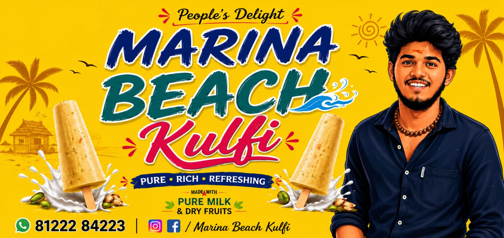

Contact Number:81222 84223
Timing:7.00 PM TO 2.00 AM
Location:ESCI HOSPITAL, KK NAGAR, CHENNAI
100% Natural Recipe: The kulfis are made using thick, slow-boiled milk without any food colours, artificial syrups, or preservatives.
Eco-Friendly Serving: Sticking to local tradition, the kulfis are often served on dried palm leaves (thonnai).
Late-Night kk nagar Vibe: The kk nagar cart is heavily crowded until past midnight, where customers enjoy the ocean breeze with cold kulfi
Signature Flavors: While legendary for its traditional Malai Kulfi and Mango Kulfi, they serve varieties packed with almonds, cashews, raisins, and even chocolate chips